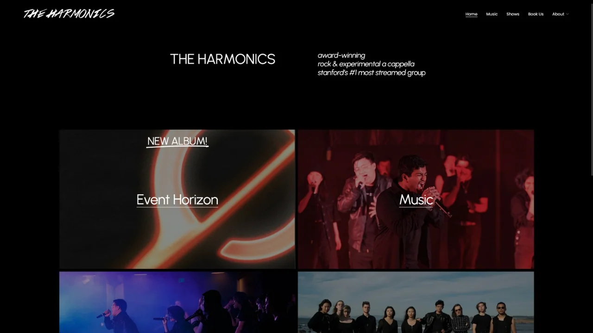
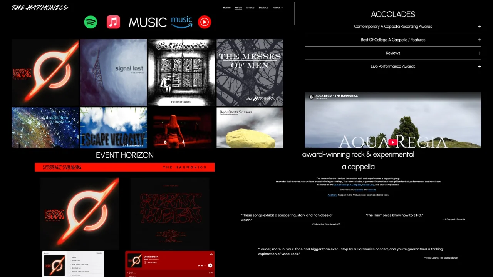
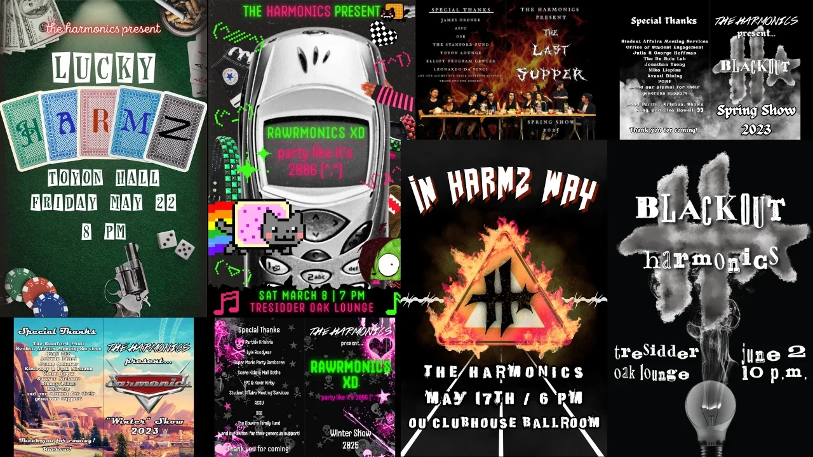
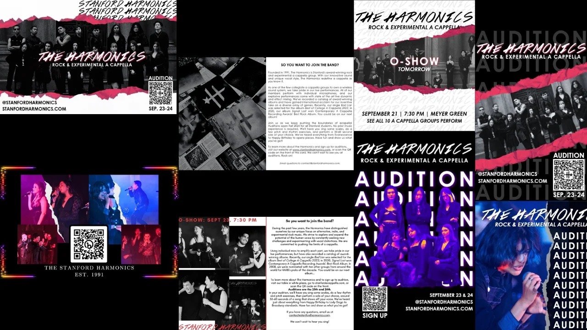
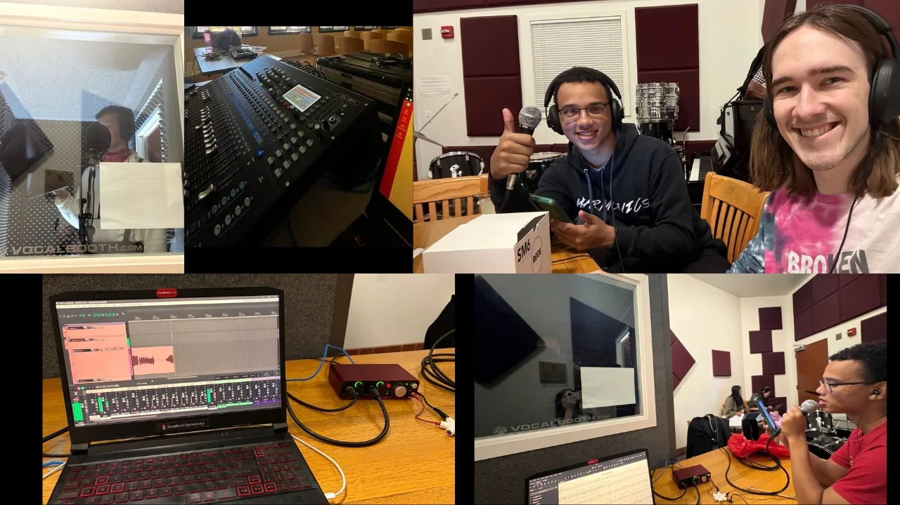

Web Redesign · Visual Design · Operations & Production
Stanford Harmonics
Redesigning the website, shaping the visual identity, and leading operations and album production across four years with Stanford’s award-winning rock & experimental a cappella group.

Why the Site Needed an Overhaul
A cappella at Stanford is competitive, and every September our website is the first place new students and prospective auditionees go to check us out. A clear, welcoming site makes a huge difference in convincing people to audition.
Our old site was built on a 2014 Squarespace 7.0 template that had become outdated and confusing to navigate. Information was spread across too many separate pages, photos and member bios were out of date, and there were very few modern media embeds for our music or videos. There was no easy way for visitors to book us, listen to our albums, or find our next show date.
Making Information Easy to Find
I started with the pages people came to our site to find: our music, our shows, and how to book us.
I combined the separate “Listen,” “Albums,” and “Videos” pages into a single Music page with streaming embeds and music videos. I also gave our awards a place of their own so prospective auditionees could see what the group had done.
I created a new Shows page featuring upcoming concert info alongside an archive of past show posters and links to their YouTube playlists, and turned the contact page into a simple fillable form.
Because future group members might not have a technical background, I built the new site on the modern Squarespace engine so it remains easy for the group to update and maintain long after I graduate.
Following the redesign, average monthly traffic grew from roughly 200 to 350 visitors (+75%), and peak September traffic during audition season doubled from around 600 to 1,200 visitors (+100%).


Four Years as Publicity Director
Beyond the website, I served as the Harmonics’ Publicity Director all four years at Stanford, handling the group’s visual identity, marketing, and print design.
I designed 6 show posters and programs across four years of performances.
I also created posters and multimedia promotional materials for 3 fall audition seasons, and designed the group's annual member merch all four years.




President & Album Manager
Alongside my design work, I helped run the group’s day-to-day operations and music production:
As Business Manager (President), I managed all group operations, finances, equipment purchases, event logistics, internal knowledge management, and communications.
As Album Manager & Lead Recording Engineer, I led production for the group’s upcoming studio album, Ashes to Ashes, releasing later in 2026. I managed the recording process, schedule, and timeline and coordinated with our editor, mixer, mastering engineer, licensing partners, cover artist, and distributors. My arrangement of Toby Fox’s “BIG SHOT” will be featured on the album, as well as my solo on "Bottom of the Deep Blue Sea".


Selected recordings
Big Shot
Arrangement · Violet Crow
Edited by Parthiv Krishna · Mixed by Ed Boyer
Work-in-progress mix
Audio file · big-shot.mp3
Deep Blue
Solo vocals and recording engineering · Violet Crow
Edited by Parthiv Krishna · Mixed by Ed Boyer
Work-in-progress mix
Audio file · deep-blue.mp3